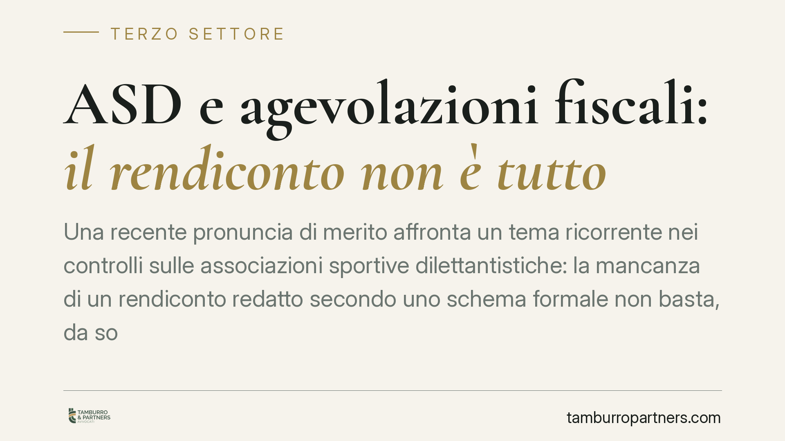

ASD e agevolazioni fiscali: il rendiconto non è tutto
Una recente pronuncia di merito affronta un tema ricorrente nei controlli sulle associazioni sportive dilettantistiche: la mancanza di un rendiconto redatto secondo uno schema formale non basta, da sola, a far perdere le agevolazioni fiscali, se la regolarità della gestione emerge da altra documentazione. L'onere di provare le violazioni resta a carico dell'amministrazione finanziaria.

Il caso
Una associazione sportiva dilettantistica (ASD) si vede contestare dall'Agenzia delle Entrate la perdita delle agevolazioni fiscali per non aver predisposto un rendiconto economico-finanziario conforme a uno schema formale. La verifica, avviata a seguito di accessi della Guardia di Finanza, muoveva dall'assenza del documento contabile tipico richiesto dalla disciplina di settore.
La questione è tutt'altro che marginale. Le agevolazioni collegate al regime della L. 398/1991 e alla decommercializzazione dei corrispettivi specifici prevista dall'art. 148 TUIR incidono in modo sostanziale sul carico fiscale degli enti sportivi. La loro contestazione comporta, nella pratica, il recupero a tassazione di importi spesso rilevanti.
L'inquadramento normativo
Il beneficio della L. 398/1991 consente a determinati enti non commerciali di applicare un regime forfetario di determinazione di IVA e imposte dirette. L'art. 148 TUIR, a sua volta, esclude dalla base imponibile i corrispettivi versati dagli associati per le attività istituzionali, a condizione che siano rispettati requisiti statutari e gestionali precisi: democraticità del rapporto associativo, tenuta della contabilità, redazione di un rendiconto annuale.
Va però collocato il quadro nel momento storico attuale. Con l'avvio del Codice del Terzo settore (d.lgs. 117/2017) e del RUNTS, la disciplina fiscale degli enti è in una fase di transizione: alcune disposizioni del Titolo X del CTS diventeranno pienamente operative solo dopo l'autorizzazione europea e l'allineamento con il nuovo registro. Nel frattempo, per le ASD continuano ad applicarsi la L. 398/1991 e l'art. 148 TUIR. Questo coordinamento provvisorio richiede attenzione, perché il regime applicabile dipende dall'iscrizione dell'ente e dal periodo d'imposta considerato.
Il principio affermato
La pronuncia di merito valorizza la distinzione tra forma e sostanza. L'assenza di un rendiconto redatto secondo uno specifico modello non equivale, di per sé, all'assenza di una contabilità regolare. Se la correttezza e la trasparenza della gestione risultano comunque dimostrabili attraverso altra documentazione, il requisito sostanziale può ritenersi soddisfatto.
Su questa base si innesta il tema dell'onere della prova. L'art. 7, comma 5-bis, del d.lgs. 546/1992, introdotto dalla riforma del processo tributario, dispone che l'amministrazione provi in giudizio le violazioni contestate. Non è dunque sufficiente rilevare una carenza documentale formale: spetta all'ente dimostrare la propria buona fede, ma è il Fisco a dover fondare la ripresa su elementi concreti che attestino la natura commerciale dell'attività o l'abuso delle agevolazioni.
Si tratta, è bene precisarlo, di una decisione di primo grado, priva di efficacia vincolante al di fuori del giudizio in cui è stata resa. Ne va quindi apprezzata la ratio, senza attribuirle la portata di un orientamento consolidato.
Le implicazioni pratiche
Per un'associazione sportiva, la lettura combinata di questi principi offre un margine di difesa, ma non autorizza a trascurare la gestione documentale. La pronuncia non legittima l'assenza del rendiconto: afferma che la sua mancanza formale non è automaticamente fatale, purché la sostanza sia provabile.
In concreto, l'ente che disponga di una contabilità ordinata e di un impianto documentale coerente parte da una posizione più solida. Al contrario, chi non è in grado di ricostruire movimenti e finalità delle somme movimentate resta esposto al recupero, indipendentemente dal nome attribuito al documento contabile.
Cosa fare in concreto
- È opportuno redigere comunque il rendiconto economico-finanziario annuale, approvandolo nei termini statutari e conservando i verbali di approvazione.
- La documentazione contabile alternativa va conservata e tenuta ordinata: estratti conto bancari, fatture, ricevute, registro delle entrate e delle uscite.
- È utile mantenere evidenza della vita associativa (verbali assembleari, libro soci, tesseramenti) a sostegno della natura istituzionale dell'attività.
- Va verificata la coerenza del regime fiscale applicato con lo stato di iscrizione dell'ente e con il periodo d'imposta, alla luce della transizione verso il CTS.
- In caso di contestazione, è rilevante richiamare la ripartizione dell'onere della prova prevista dall'art. 7, comma 5-bis, d.lgs. 546/1992.
La tenuta contabile andrebbe affrontata come attività ordinaria dell'ente, non come adempimento da ricostruire in sede contenziosa.
---
Contributo informativo a cura di Tamburro & Partners Avvocati. Non costituisce parere legale.
Ogni ente del terzo settore ha la sua storia.
Se rappresenti un ETS e vuoi un confronto su governance, RUNTS o fiscalità, scrivi allo studio. Ti rispondiamo entro un giorno lavorativo.